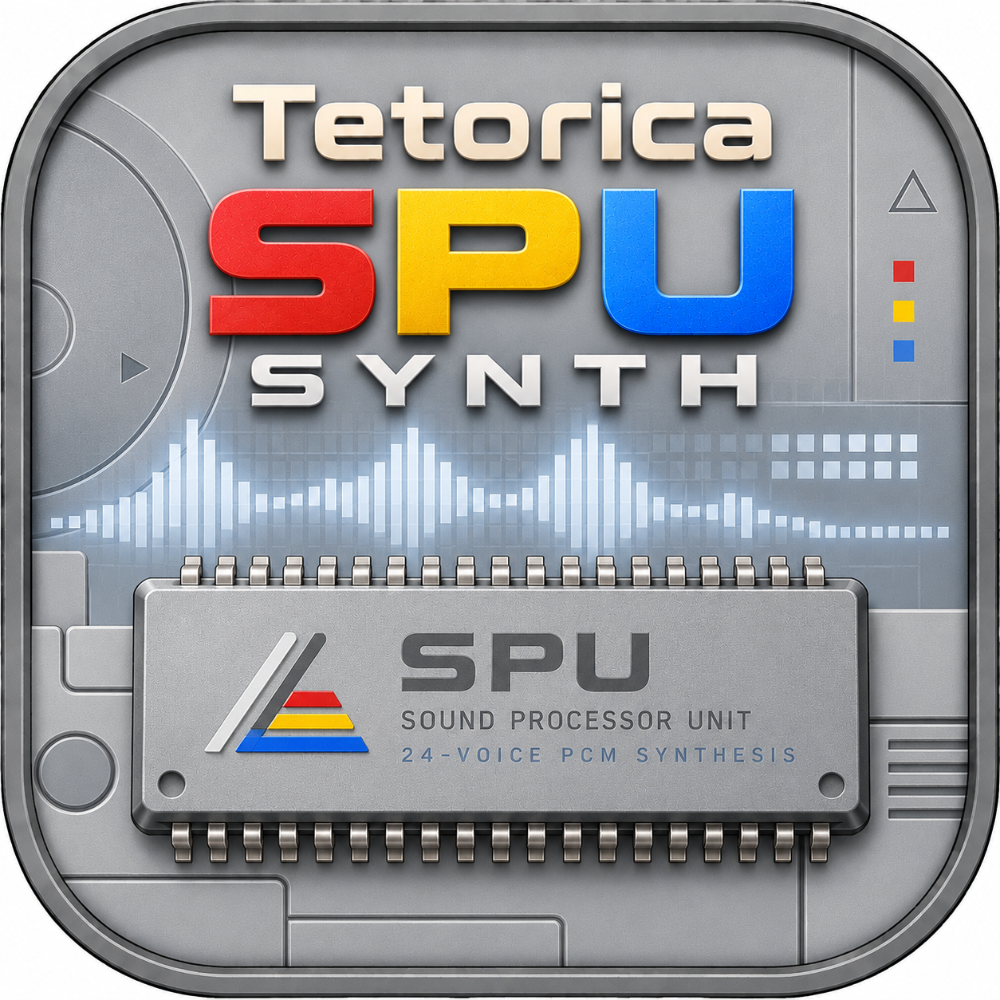

SAMPLE · ENVELOPE · REVERB
Tetorica SPU Synth
PlayStation 1 SPU synthesizer / emulator
Enable audio, then play a note to get started.
Live output envelope · Watch the sound’s level over time.
Audio sample
Load a recording or sound file to play it as an instrument. Loading audio replaces the PCM cycle.
Built-in sine cycle
Choose looping before loading a file. The root note sets the sample’s original pitch.
Keyboard
Play this instrument with your computer keyboard or the keys below.
. Release notes follows the instrument’s release envelope. Stop all sound also clears held notes and reverb tails.